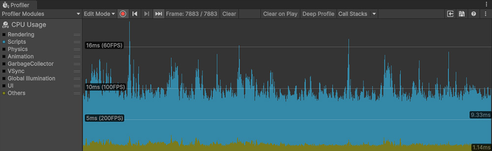
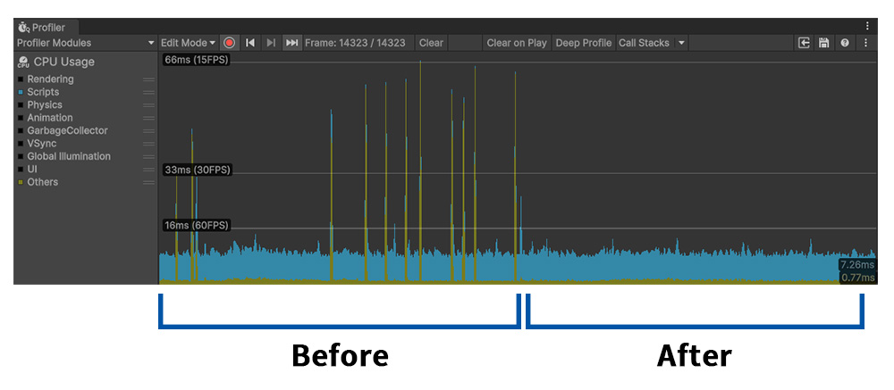

AnyPortrait > 메뉴얼 > 유니티 2023에서의 성능 문제
유니티 2023에서의 성능 문제
1.4.8
Unity 2023은 이전 버전에 비해 디자인이나 기능이 크게 바뀐 버전입니다.
AnyPortrait와의 호환성에 대해서도 저희 팀은 주의깊게 살펴보고 있습니다.
모든 기능이 정상적으로 동작하기를 바라지만, 안타깝게도 저희 팀은 이 버전에서만 나타나는 성능 문제를 발견했습니다.
성능 문제가 발생하는 조건은 다음과 같습니다.
(1) AnyPortrait 에디터를 별개의 윈도우로 엽니다.
(2) 유니티 에디터 및 AnyPortrait 에디터가 열린 상태에서 다른 프로그램(예: 인터넷 브라우저 등)을 선택하여 윈도우 포커스를 이동시킵니다.
(3) 다시 AnyPortrait 에디터로 돌아오면 성능이 크게 떨어집니다.
저희 팀은 이 문제의 원인을 정확하게 파악하지는 못했지만, 성능 저하를 감지하는 기능과, 이 문제를 해소하는 기능을 테스트를 통해 구현했습니다.
이 페이지에서 성능 문제가 발생했을 때 성능이 어떻게 저하되는지와 해결 방법을 확인해보세요.

Unity 2023에서 데모 씬의 캐릭터를 AnyPortrait 에디터로 연 상태입니다.
이 상태에서 프로파일러를 실행해보겠습니다.

프로파일러를 실행하면 큰 성능 이슈 없이 정상적으로 동작하는 것을 볼 수 있습니다.
(성능 이슈를 보여드리기 위해서 "Scripts"와 "Others" 항목만 활성화했습니다.)
에디터를 닫지 않은 상태에서 외부의 프로그램 윈도우를 잠시 선택했다가 돌아와봅시다.

AnyPortrait 에디터로 돌아오면 "Others" 항목이 빈번하게 아주 낮은 성능으로 동작하는 것을 볼 수 있습니다.
해당 항목은 유니티 에디터가 대기 상태일 때에 대한 처리로 추정되는데, AnyPortrait 에디터로 돌아온 이후에도 여전히 해당 처리가 반복되어 성능을 크게 떨어트립니다.

프로파일러에서 확인했던 성능 저하가 감지되면, 보기 메뉴 옆에 새로운 "성능 복구 버튼" 이 자동으로 나타납니다.
이 버튼은 에디터의 "대기 상태"를 해소하여 성능 문제를 해결하는 역할을 합니다.
이 버튼을 누르고 프로파일러를 확인해봅시다.

성능 복구 버튼을 누르면 다시 정상적으로 복구되는 것을 프로파일러에서 확인할 수 있습니다.
성능 복구 버튼은 일정 시간 성능 저하가 감지되어야 나타나므로, 버튼이 나타나지 않는다면 조금 기다리면 됩니다.
성능 복구 버튼이 빈번하게 나타나지 않도록, 버튼을 누른 이후에는 10초 정도 대기 시간을 가집니다.
Unity 2022 또는 이전 버전에서는 성능 이슈가 발견되지 않았으므로 이 기능은 동작하지 않습니다.
이 이슈는 아직 원인이 정확하게 파악되지 않았습니다.
문제가 해결되지 않았다면 저희 팀에게 연락을 주세요!